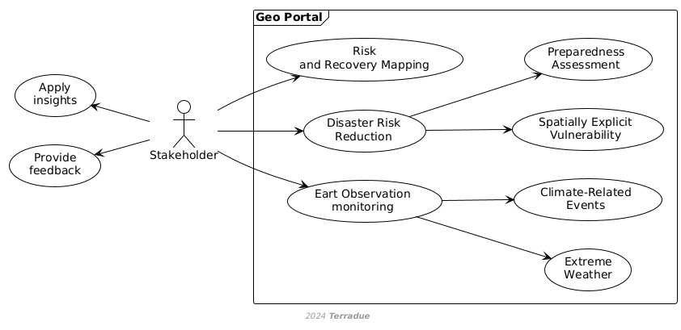

D1 · CopernicusLAC Centre Specification and Performance Requirements · Capítulo 2.2
Service Stakeholder
Service Stakeholder: usa las aplicaciones web co-diseñadas —mapeo de riesgo y recuperación, evaluación de vulnerabilidad y monitorización de eventos extremos— y aporta retroalimentación.
pp. 91 fig.
Service Stakeholders interact with service web applications that are co-designed with stakeholders and users from the CopernicusLAC services procurement. The service web applications, developed in the activities of a parallel project, provide essential EO-based information co-designed with stakeholders, enhancing the platform's relevance and usability in addressing key areas such as disaster risk reduction and climate event monitoring The Service Stakeholders main responsibilities include:
- Utilising service web applications developed in the CopernicusLAC services procurement, focusing on:
- Risk and Recovery Mapping
- Spatially Explicit Vulnerability and Preparedness Assessment for Disaster Risk Reduction on a national to regional level, including baseline maps.
- EO Monitoring of Extreme Weather and Climate-Related Events (e.g., heatwaves, extreme rainfall, droughts, flooding, and wildfires).
- Providing feedback on the functionality and usability of the web applications.
- Applying the insights gained from the applications to their specific domain areas, such as disaster risk reduction and climate event monitoring.
